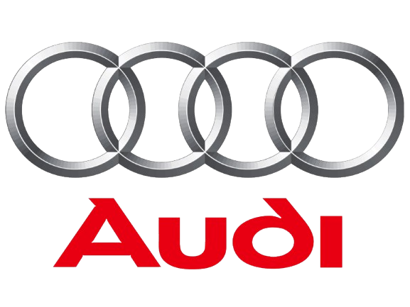

Born from a Vision
Audi was built on a belief that engineering should not only move people, but elevate the whole driving experience through design, intelligence, and performance.
Vorsprung durch Technik
AUDI
Precision. Power. Presence. Experience the future of driving through a world shaped by technology, design, and emotion.

Audi Automotive Collection
Audi brings together precision engineering, intelligent design, and a clear vision of the future. Every model reflects a long pursuit of performance, luxury, and innovation that continues to shape the way we drive.

1 — The Audi Legacy
Audi was built on a belief that engineering should not only move people, but elevate the whole driving experience through design, intelligence, and performance.
Lightweight construction, refined aerodynamics, and performance-focused engineering have long defined the Audi philosophy of precision and control.
Audi has continually developed technologies in-house, from quattro traction to digital cockpit systems and electrified performance platforms.
2 — The Performance Collection
Audi lineup represents a balance of elegance, technology, and relentless performance. Each model carries the same philosophy: every journey should feel composed, intelligent, and unforgettable.
Luxury sedan
Modern elegance, premium comfort, and refined daily performance in a compact executive form.
Discover A ClassSUV
Versatile luxury with confident stance, spacious cabin, and intelligent all-road capability.
Discover Q ClassPerformance sedan
Executive power, dynamic handling, and a premium identity built for high-performance comfort.
Discover S ClassTrack-inspired
High-output engineering with motorsport energy, aggressive design, and uncompromising speed.
Discover RSElectric luxury
Silent power, advanced EV technology, and a futuristic take on premium driving.
Discover e-tron3 — The Heart of the Machine
Audi’s performance philosophy relies on efficient turbocharged engines that deliver instant response and strong output without sacrificing everyday driveability.
The iconic quattro drivetrain improves traction, stability, and confidence, especially in changing road and weather conditions.
Horsepower gives the sense of speed while torque defines the force behind acceleration, together shaping the unmistakable Audi driving character.
Lower weight increases agility, improves efficiency, and sharpens the way a car responds to the driver on road and track.
4 — Engineering & Technology
Permanent traction and predictable grip under pressure.
Sculpted surfaces balance performance, efficiency, and road presence.
Intelligent controls, immersive displays, and connected clarity.
5 — About This Collection
This collection presents Audi as a modern benchmark of luxury performance, precision engineering, and digital innovation. Each model reflects the brand’s enduring commitment to technology, confidence, and driving pleasure.
“Progress through technology” is more than a slogan — it is the principle behind every model, every detail, and every drive.
— Audi philosophy